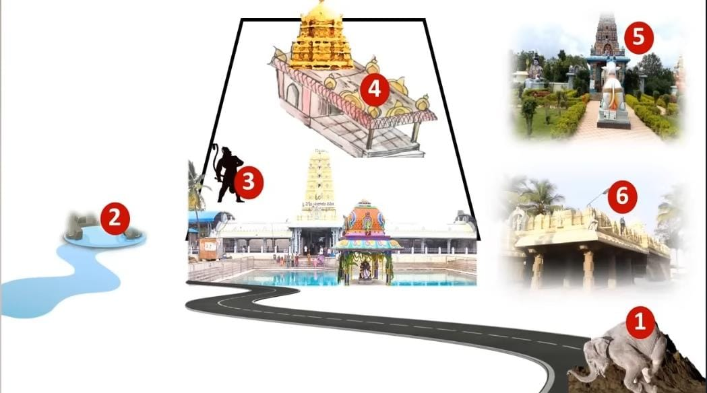

Manikanteswara Swamy Temple,Kanipakam Varasiddhi Vinayaka Swamy Temple,Kanipakam Varadaraja Swamy Temple,Kanipakam
At Varasiddhi Vinayaka Kshetram near Tirupati, known as KANIPAKAM, a strange event occurs during the evening from 5 pm to 5:30 pm, called Satya Pramana Samayam.
If there are legal cases without proper evidence or testimonies from both parties, then they come to the temple during this time.
They bathe in the Pushkarini (temple tank), perform three circumambulations around the temple, and stand before the deity Lord Ganapati.
Even the priests also go out leaving only these two individuals inside the temple.
Then they both have to promise to speak only the truth in front of Lord Ganapati.
In many incidents, people have confessed their faults while performing the circumambulations.
According to the locals belief, if someone lies in front of Swami after promising, they will be punished within 90 days.
Many people shared various experiences, but the truth remains unknown as even the priests leave the temple during these times.
There is a true story which was shared by a man who experienced the result of this event, he confidently asserted that those who lie after promising will be surely punished.
He mentioned knowing a specific incident involving a husband and wife.
The wife had committed an act that is unacceptable after marriage.
And though the husband caught her red-handed, she denied it, claiming the other person was like a brother to her.
The husband assured her that he wouldn't leave her, but on the condition that she admits her mistake and promises not to repeat it.
However, the wife denied any wrong doing and refused to accept her mistake. She even stated that she would promise that she didn't do anything wrong.
Then the husband brought his wife to Kanipakam.
While she was taking a dip in the Pushkarini and circumambulating around the temple, the husband tried to convince her.
However, she confidently denied any wrong doing, and made the promise in front of Ganapati Swami.
Strangely, after coming outside and going near the arch located at some distance from the temple, she suddenly felt dizzy and collapsed.
She was rushed to the hospital, but upon waking up, she had forgotten everything and became mentally ill.
This led to great difficulties in her life, as she would sometimes remember her actions and feel remorse, but then forget about it again.
For a proof, he pointed at a woman who was roaming around, claiming that she was the same woman from the incident.
Then he revealed that he himself was the husband in the incident.
The reason for sharing this story is to let you know the power of Kanipakam Ganapati. If someone lies there, surely their life gets destroyed.
But if they worship Swami for 40 days after taking a bath in the Pushkarini with remorse, then their life gets back to normal.
People who were suffering from addictions like drinking, gambling, and illicit relationships have been helped by making them promise in front of Swami.
Afterward, they do not even want to commit that mistake again. This explains the wonderful power of Swami.
Today, let's know about the Kanipakam Ganapati. People often share the story of 3 disabled individuals related to Kanipakam.
Besides that, there are 6 special attractions that we must explore in Kanipakam.

TEMPLE MAP
Next »